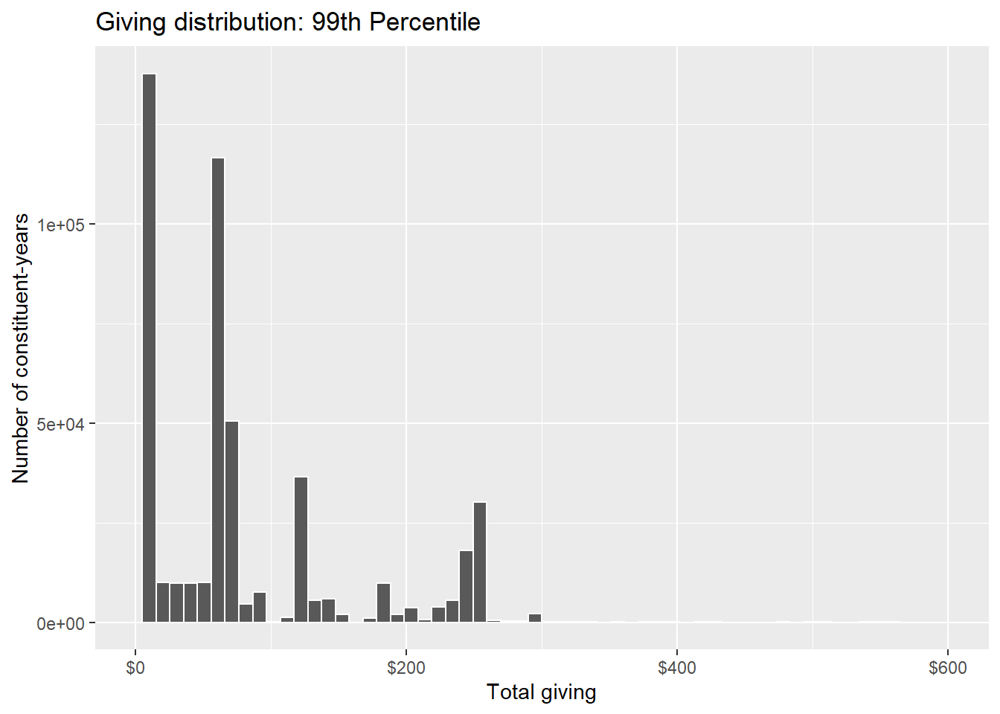
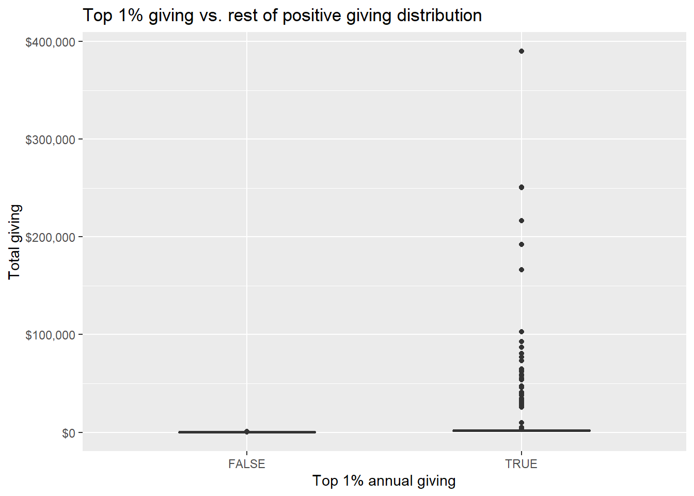
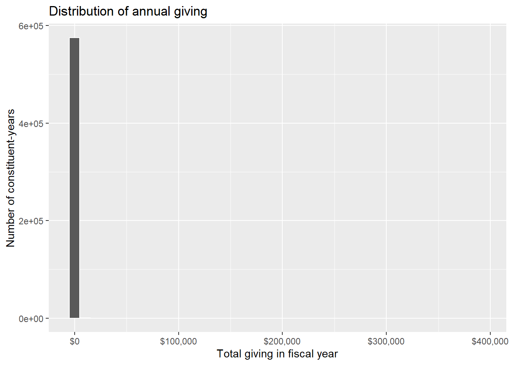
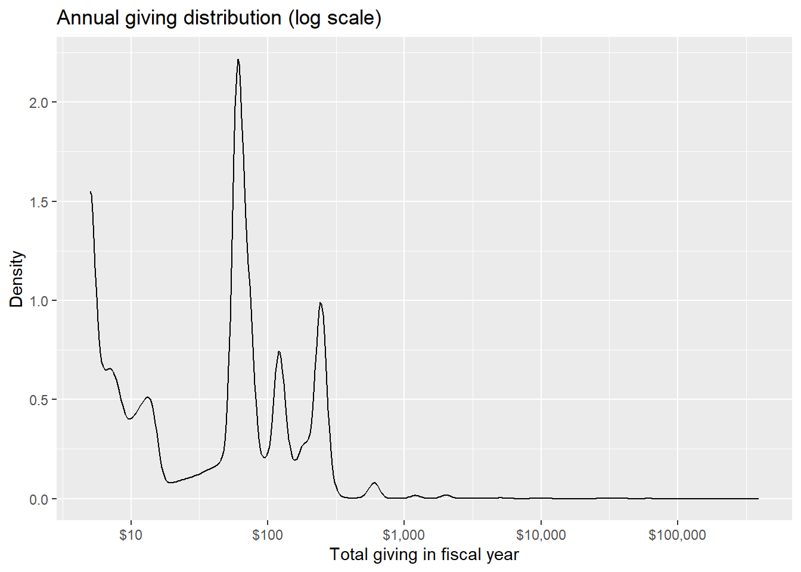
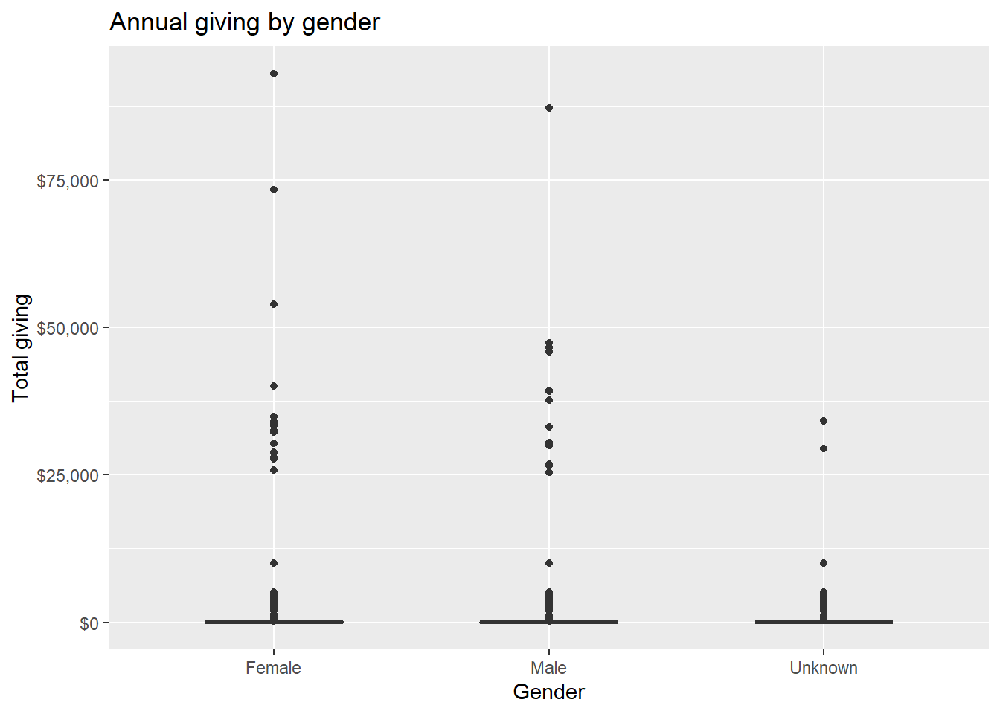
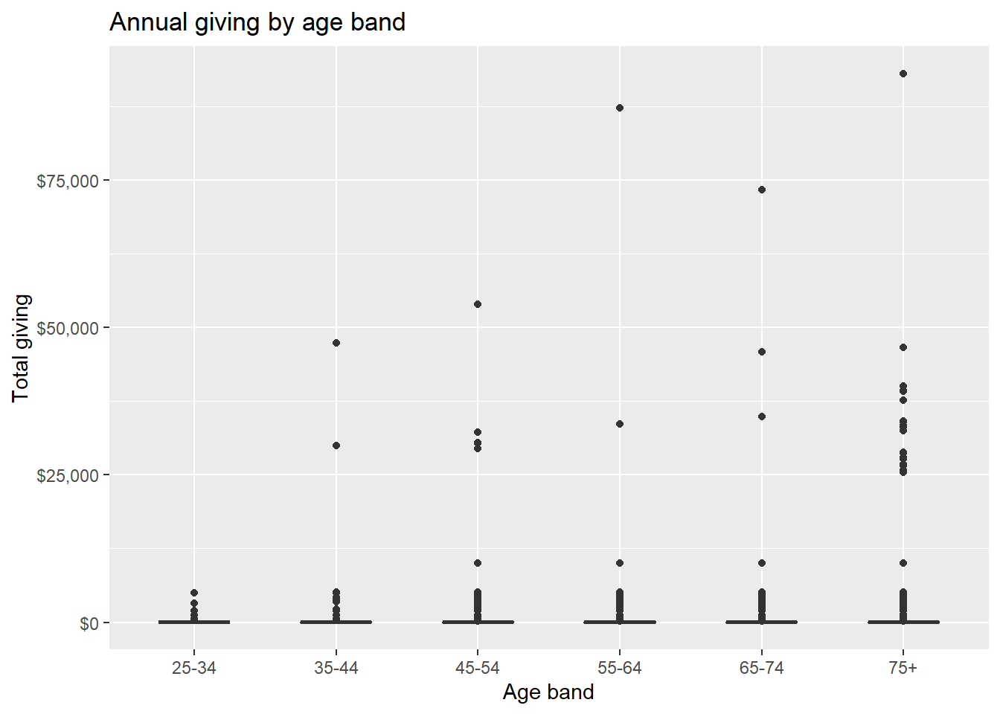
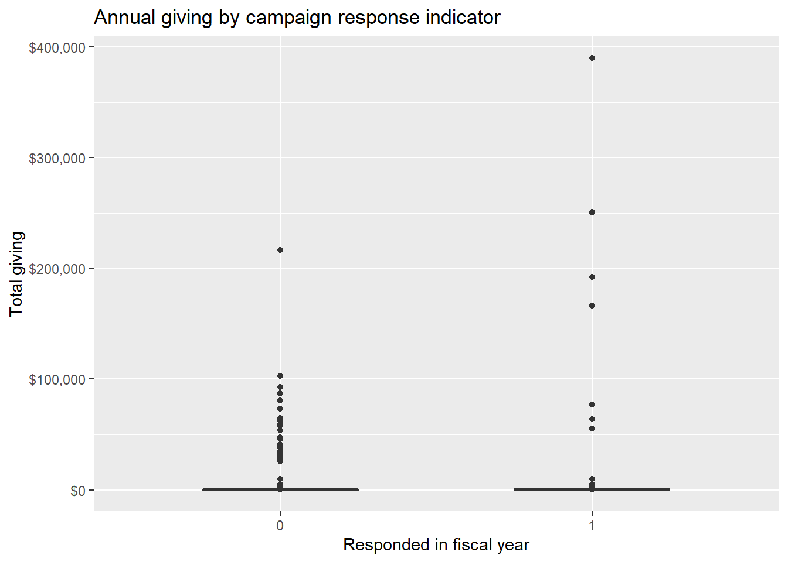
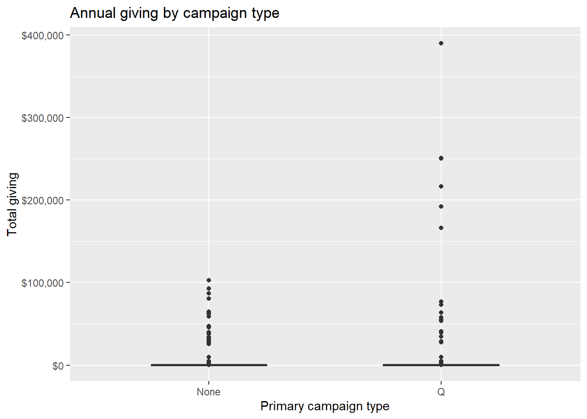
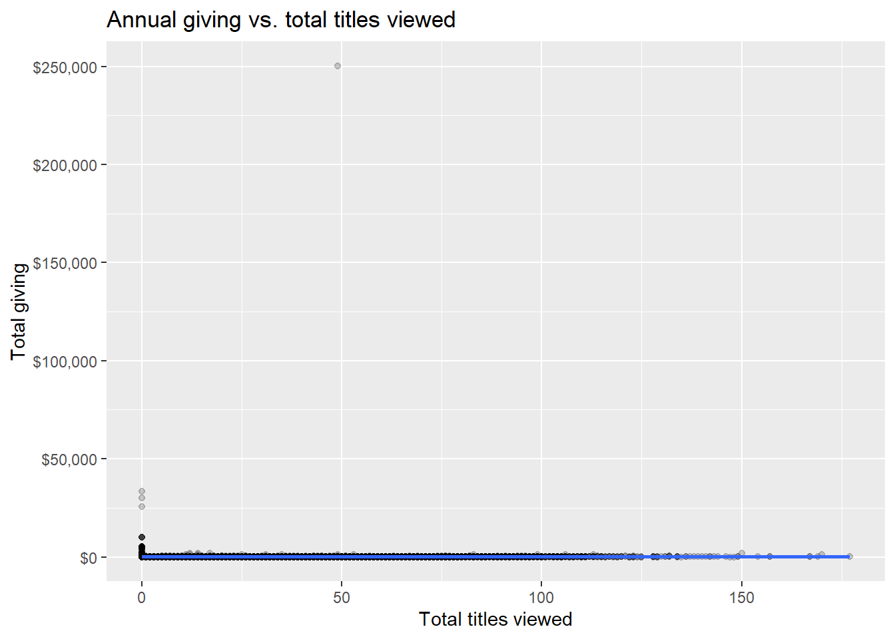

library(readr)
library(dplyr)
library(tidyr)
library(stringr)
library(lubridate)
library(ggplot2)
library(janitor)PBS Utah Donor Individual EDA
Section 1: Introduction and problem framing
PBS Utah has turned to relying more heavily on donations since federal funding was rescinded in 2025. Although many donors have generously contributed after the rescission, it has not been enough to offset the impact of losing federal funding.
Given this major change in funding, PBS Utah needs a way to effectively identify and target potential donors to ensure it can continue operations without scaling back.
This EDA explores synthetic data representing historical donations to PBS Utah. We check data cleanliness and quality and work to understand top predictors of donor behavior.
1.2 Guiding Questions
Specifically, we seek to answer the following questions:
- Are there any data quality issues that need to be addressed before modeling?
- How does donor demographics (e.g., age, gender, marital status) relate to donation behavior?
- How does donor engagement (e.g., event attendance, campaign participation) relate to donation behavior?
- How does donor PBS Utah viewing history relate to donation behavior?
Section 2: Data inventory and source audit
This section loads the source files from GitHub, checks that the URLs resolve, and produces a basic data-quality audit before any joining or modeling.
2.1 Load libraries
2.2 Define source URLs
The core datasets for this EDA are read directly from GitHub so the notebook is reproducible without local files.
source_urls <- list(
constituents_w_memberships =
"https://raw.githubusercontent.com/jefftwebb/donor_prediction_capstone_project/main/tables/constituents_w_memberships.csv",
unite_payments =
"https://raw.githubusercontent.com/jefftwebb/donor_prediction_capstone_project/main/tables/unite_payments.csv",
team_approach_legacy_payments =
"https://raw.githubusercontent.com/jefftwebb/donor_prediction_capstone_project/main/tables/team_approach_legacy_payments.csv",
passport_viewing =
"https://raw.githubusercontent.com/jefftwebb/donor_prediction_capstone_project/main/tables/passport_viewing.csv",
cultivation =
"https://raw.githubusercontent.com/jefftwebb/donor_prediction_capstone_project/main/tables/cultivation.csv",
campaign_codes =
"https://raw.githubusercontent.com/jefftwebb/donor_prediction_capstone_project/main/tables/campaign_codes.csv",
campaign_members =
"https://raw.githubusercontent.com/jefftwebb/donor_prediction_capstone_project/main/tables/campaign_members.csv",
soft_credits =
"https://raw.githubusercontent.com/jefftwebb/donor_prediction_capstone_project/main/tables/soft_credits.csv"
)
source_urls$constituents_w_memberships
[1] "https://raw.githubusercontent.com/jefftwebb/donor_prediction_capstone_project/main/tables/constituents_w_memberships.csv"
$unite_payments
[1] "https://raw.githubusercontent.com/jefftwebb/donor_prediction_capstone_project/main/tables/unite_payments.csv"
$team_approach_legacy_payments
[1] "https://raw.githubusercontent.com/jefftwebb/donor_prediction_capstone_project/main/tables/team_approach_legacy_payments.csv"
$passport_viewing
[1] "https://raw.githubusercontent.com/jefftwebb/donor_prediction_capstone_project/main/tables/passport_viewing.csv"
$cultivation
[1] "https://raw.githubusercontent.com/jefftwebb/donor_prediction_capstone_project/main/tables/cultivation.csv"
$campaign_codes
[1] "https://raw.githubusercontent.com/jefftwebb/donor_prediction_capstone_project/main/tables/campaign_codes.csv"
$campaign_members
[1] "https://raw.githubusercontent.com/jefftwebb/donor_prediction_capstone_project/main/tables/campaign_members.csv"
$soft_credits
[1] "https://raw.githubusercontent.com/jefftwebb/donor_prediction_capstone_project/main/tables/soft_credits.csv"2.3 Validate URLs
The GitHub CSVs for this project are LFS-backed, so we use the GitHub media endpoint as a fallback. This code checks whether a URL resolves and returns a usable first line.
resolve_csv_url <- function(path) {
raw_url <- paste0(
"https://raw.githubusercontent.com/jefftwebb/donor_prediction_capstone_project/main/",
path
)
media_url <- paste0(
"https://media.githubusercontent.com/media/jefftwebb/donor_prediction_capstone_project/main/",
path
)
raw_ok <- tryCatch({
hdr <- read_lines(raw_url, n_max = 1)
length(hdr) > 0 && !grepl("^version https://git-lfs.github.com/spec/v1$", hdr[1])
}, error = function(e) FALSE)
if (raw_ok) return(raw_url)
media_ok <- tryCatch({
hdr <- read_lines(media_url, n_max = 1)
length(hdr) > 0 && !grepl("^version https://git-lfs.github.com/spec/v1$", hdr[1])
}, error = function(e) FALSE)
if (media_ok) return(media_url)
NA_character_
}
fiscal_year_july <- function(date_vec) {
ifelse(
month(date_vec) >= 7,
year(date_vec) + 1L,
year(date_vec)
)
}2.4 Load datasets
# Map each dataset name to the path on GitHub
paths <- list(
constituents_w_memberships = "tables/constituents_w_memberships.csv",
unite_payments = "tables/unite_payments.csv",
team_approach_legacy_payments = "tables/team_approach_legacy_payments.csv",
passport_viewing = "tables/passport_viewing.csv",
cultivation = "tables/cultivation.csv",
campaign_codes = "tables/campaign_codes.csv",
campaign_members = "tables/campaign_members.csv",
soft_credits = "tables/soft_credits.csv"
)
resolved_urls <- tibble(
dataset = names(paths),
path = unlist(paths),
url = sapply(unlist(paths), resolve_csv_url)
)
resolved_urls# A tibble: 8 × 3
dataset path url
<chr> <chr> <chr>
1 constituents_w_memberships tables/constituents_w_memberships.csv https:…
2 unite_payments tables/unite_payments.csv https:…
3 team_approach_legacy_payments tables/team_approach_legacy_payments.csv https:…
4 passport_viewing tables/passport_viewing.csv https:…
5 cultivation tables/cultivation.csv https:…
6 campaign_codes tables/campaign_codes.csv https:…
7 campaign_members tables/campaign_members.csv https:…
8 soft_credits tables/soft_credits.csv https:…# Read the datasets that resolved successfully
read_dataset <- function(dataset_name) {
url <- resolved_urls$url[resolved_urls$dataset == dataset_name]
if (is.na(url) || length(url) == 0) {
stop(paste("No valid URL found for:", dataset_name))
}
read_csv(url, show_col_types = FALSE)
}
constituents_w_memberships <- read_dataset("constituents_w_memberships")
unite_payments <- read_dataset("unite_payments")
team_approach_legacy_payments <- read_dataset("team_approach_legacy_payments")
passport_viewing <- read_dataset("passport_viewing")
cultivation <- read_dataset("cultivation")
campaign_codes <- read_dataset("campaign_codes")
campaign_members <- read_dataset("campaign_members")
soft_credits <- read_dataset("soft_credits")2.5 Audit: row counts and column counts
# Now checking general structure of each dataset
dataset_metadata <- tibble(
dataset = c(
"constituents_w_memberships",
"unite_payments",
"team_approach_legacy_payments",
"passport_viewing",
"cultivation",
"campaign_codes",
"campaign_members",
"soft_credits"
),
n_rows = c(
nrow(constituents_w_memberships),
nrow(unite_payments),
nrow(team_approach_legacy_payments),
nrow(passport_viewing),
nrow(cultivation),
nrow(campaign_codes),
nrow(campaign_members),
nrow(soft_credits)
),
n_cols = c(
ncol(constituents_w_memberships),
ncol(unite_payments),
ncol(team_approach_legacy_payments),
ncol(passport_viewing),
ncol(cultivation),
ncol(campaign_codes),
ncol(campaign_members),
ncol(soft_credits)
)
)
dataset_metadata# A tibble: 8 × 3
dataset n_rows n_cols
<chr> <int> <int>
1 constituents_w_memberships 196167 22
2 unite_payments 1722698 13
3 team_approach_legacy_payments 1202857 44
4 passport_viewing 444741 5
5 cultivation 4000 7
6 campaign_codes 29249 17
7 campaign_members 5233404 8
8 soft_credits 4145 92.6 Audit: duplicate key checks
This is a quick check for obvious primary-key problems. The exact “key” column depends on the file.
key_checks <- tibble(
dataset = c(
"constituents_w_memberships",
"unite_payments",
"team_approach_legacy_payments",
"passport_viewing",
"campaign_codes",
"cultivation",
"campaign_members",
"soft_credits"
),
key_col = c(
"Constituent ID",
"payment_id",
"ta_account_id",
"UID",
"Marketing Code",
NA_character_,
NA_character_,
"soft_credit_id"
),
duplicate_key_rows = c(
sum(duplicated(constituents_w_memberships$`Constituent ID`)),
sum(duplicated(unite_payments$payment_id)),
sum(duplicated(team_approach_legacy_payments$ta_account_id)),
sum(duplicated(passport_viewing$UID)),
sum(duplicated(campaign_codes$`Marketing Code`)),
NA_integer_,
NA_integer_,
sum(duplicated(soft_credits$soft_credit_id), na.rm = TRUE)
)
)
key_checks# A tibble: 8 × 3
dataset key_col duplicate_key_rows
<chr> <chr> <int>
1 constituents_w_memberships Constituent ID 0
2 unite_payments payment_id 0
3 team_approach_legacy_payments ta_account_id 614014
4 passport_viewing UID 0
5 campaign_codes Marketing Code 0
6 cultivation <NA> NA
7 campaign_members <NA> NA
8 soft_credits soft_credit_id 02.7 Audit: missing values by file
missing_summary <- bind_rows(lapply(list(
constituents_w_memberships = constituents_w_memberships,
unite_payments = unite_payments,
team_approach_legacy_payments = team_approach_legacy_payments,
passport_viewing = passport_viewing,
cultivation = cultivation,
campaign_codes = campaign_codes,
campaign_members = campaign_members,
soft_credits = soft_credits
), function(df) {
tibble(
dataset = deparse(substitute(df)),
column = names(df),
missing_n = sapply(df, function(x) sum(is.na(x))),
missing_pct = sapply(df, function(x) mean(is.na(x)))
)
})) |>
filter(missing_n > 0) |>
arrange(dataset, desc(missing_pct))
missing_summary# A tibble: 43 × 4
dataset column missing_n missing_pct
<chr> <chr> <int> <dbl>
1 df UofU Degree Info 196167 1
2 df Latest UofU Degree Year 196167 1
3 df UofU Employment Status 196167 1
4 df source_description 1202857 1
5 df county 1202857 1
6 df program 1202857 1
7 df premium_1_code 1202857 1
8 df premium_1_name 1202857 1
9 df premium_2_code 1202857 1
10 df premium_2_name 1202857 1
# ℹ 33 more rowsThe missing-value audit shows that NA values are concentrated in a small set of columns rather than being uniformly distributed across all files.
- In
constituents_w_memberships, the UofU-related fieldsUofU Degree Info,Latest UofU Degree Year, andUofU Employment Statusare entirely missing in this extract, so they should be treated as unavailable rather than partially observed features. - In
team_approach_legacy_payments, several descriptive fields are also fully missing, includingsource_description,county,program, and the premium fieldspremium_1_code,premium_1_name,premium_2_code,premium_2_name,premium_3_code, andpremium_3_name; these are therefore poor candidates for downstream analysis without outside documentation or replacement data. - In
campaign_codes,Campaign Descriptionis fully missing, so it does not add usable explanatory detail beyond the other campaign lookup fields. - In
campaign_members, the response metadata fieldsresponse_typeandresponded_datehave substantial missingness, which supports emphasizing higher-level indicators such as whether a response occurred rather than relying heavily on the more detailed response descriptors.
2.8 Audit: blanks and whitespace-only strings
blank_summary <- bind_rows(lapply(list(
constituents_w_memberships = constituents_w_memberships,
unite_payments = unite_payments,
team_approach_legacy_payments = team_approach_legacy_payments,
passport_viewing = passport_viewing,
cultivation = cultivation,
campaign_codes = campaign_codes,
campaign_members = campaign_members,
soft_credits = soft_credits
), function(df) {
chr_cols <- names(df)[sapply(df, is.character)]
if (length(chr_cols) == 0) return(tibble())
tibble(
dataset = deparse(substitute(df)),
column = chr_cols,
blank_n = sapply(df[chr_cols], function(x) sum(str_trim(x) == "", na.rm = TRUE)),
whitespace_n = sapply(df[chr_cols], function(x) sum(str_detect(x, "^\\s+$"), na.rm = TRUE))
)
})) |>
filter(blank_n > 0 | whitespace_n > 0) |>
arrange(dataset, desc(blank_n))
blank_summary# A tibble: 0 × 4
# ℹ 4 variables: dataset <chr>, column <chr>, blank_n <int>, whitespace_n <int>The blank-string audit did not identify any character columns with notable counts of empty strings or whitespace-only entries. That suggests text missingness is being represented primarily with proper NA values instead of "" placeholders, which simplifies later cleaning because no broad blank-to-NA recoding step appears necessary.
2.9 Quick previews
constituents_w_memberships |> head()# A tibble: 6 × 22
`Constituent ID` `Spouse Constituent ID` `Address City` `Address ZIP`
<chr> <chr> <chr> <dbl>
1 S00000001 <NA> Synthetic City 97211
2 S00000002 <NA> Synthetic City 94086
3 S00000003 <NA> Synthetic City 85281
4 S00000004 <NA> Synthetic City 84576
5 S00000005 <NA> Synthetic City 84054
6 S00000006 <NA> Synthetic City 84137
# ℹ 18 more variables: `Address State` <chr>, Age <dbl>,
# `Annual Giving Group` <chr>, `Constituent Type` <chr>,
# `UofU Degree Count` <dbl>, `UofU Degree Info` <lgl>,
# `Latest UofU Degree Year` <lgl>, `UofU Employment Status` <lgl>,
# Gender <chr>, `Has UofU Legacy Gift` <lgl>,
# `Legacy Circle Member PBS Utah` <lgl>, `Lifetime UofU Fundraising` <dbl>,
# `Major Donor Class PBS Utah` <chr>, `Marital Status` <chr>, …unite_payments |> head()# A tibble: 6 × 13
donor_id designation_detail_id credit_date tender_type payment_amount
<chr> <chr> <date> <chr> <dbl>
1 S00000002 Designation 14194 2020-07-02 EFT 8
2 S00000011 Designation 2018 2021-03-25 Legacy 12
3 S00000013 Designation 1 2020-09-04 Credit Card 250
4 S00000016 Designation 1 2021-03-26 Legacy 64
5 S00000021 Designation 1 2020-07-16 EFT 5
6 S00000021 Designation 1 2020-08-04 EFT 5
# ℹ 8 more variables: pledge_gift_status <chr>, pledge_gift_type <chr>,
# opportunity_id <chr>, payment_frequency <chr>, gift_type <chr>,
# campaign_name <chr>, payment_id <chr>, marketing_code <chr>team_approach_legacy_payments |> head()# A tibble: 6 × 44
ta_account_id gift_kind gift_type gift_date activity_type campaign initiative
<chr> <chr> <chr> <date> <chr> <chr> <chr>
1 SYN-HH-00000… One-Time New 1984-01-20 M Q 0000
2 SYN-HH-00000… Sustaini… New 1983-07-26 M Q 0000
3 SYN-HH-00000… Sustaini… New 1983-08-23 M Q 0000
4 SYN-HH-00000… Sustaini… New 1983-09-07 M Q 0000
5 SYN-HH-00000… Sustaini… New 1983-10-18 M Q 0000
6 SYN-HH-00000… One-Time New 1983-12-08 M Q 0000
# ℹ 37 more variables: effort <chr>, source_code <chr>,
# source_description <lgl>, payment_amount <dbl>, payment_method <chr>,
# city <chr>, state <chr>, zip <dbl>, county <lgl>, program <lgl>,
# technique_trans <chr>, pledge_time <date>, premium_1_code <lgl>,
# premium_1_name <lgl>, premium_2_code <lgl>, premium_2_name <lgl>,
# premium_3_code <lgl>, premium_3_name <lgl>, premium_4_code <lgl>,
# premium_4_name <lgl>, premium_5_code <lgl>, premium_5_name <lgl>, …passport_viewing |> head()# A tibble: 6 × 5
constituent_id fiscal_year genre titles_viewed mean_percent_watched
<chr> <dbl> <chr> <dbl> <dbl>
1 S00000005 2021 Arts and Music 2 1
2 S00000005 2021 Drama 13 0.999
3 S00000005 2021 News and Public… 1 0.892
4 S00000006 2021 Culture 5 0.999
5 S00000006 2021 Drama 7 0.904
6 S00000006 2021 Science and Nat… 4 0.947cultivation |> head()# A tibble: 6 × 7
synthetic_id fiscal_year portfolio_id selected contacted holdout
<chr> <dbl> <chr> <lgl> <lgl> <lgl>
1 S00104067 2022 P01 TRUE TRUE FALSE
2 S00078686 2022 P01 TRUE TRUE FALSE
3 S00013646 2022 P01 TRUE FALSE TRUE
4 S00019424 2022 P01 TRUE FALSE TRUE
5 S00097775 2022 P01 TRUE TRUE FALSE
6 S00009251 2022 P01 TRUE TRUE FALSE
# ℹ 1 more variable: program_adopted <lgl>campaign_codes |> head()# A tibble: 6 × 17
`Marketing Code` `Source Category` `Campaign Name` `Campaign ID` Activity
<chr> <chr> <chr> <chr> <chr>
1 SYN-CODE-000001 Synthetic Synthetic Campaign … SYN-CODE-000… A
2 SYN-CODE-000002 Synthetic Synthetic Campaign … SYN-CODE-000… A
3 SYN-CODE-000003 Synthetic Synthetic Campaign … SYN-CODE-000… A
4 SYN-CODE-000004 Synthetic Synthetic Campaign … SYN-CODE-000… A
5 SYN-CODE-000005 Synthetic Synthetic Campaign … SYN-CODE-000… A
6 SYN-CODE-000006 Synthetic Synthetic Campaign … SYN-CODE-000… A
# ℹ 12 more variables: `Activity Type` <chr>, `Campaign Type` <chr>,
# `Initiative Year` <chr>, `Initiative Month` <chr>, Effort <chr>,
# Segment <chr>, `Communication Method` <chr>, `Communication Type` <chr>,
# Active <lgl>, `Campaign Description` <lgl>, `Gift Type` <chr>,
# Solicitation <lgl>campaign_members |> head()# A tibble: 6 × 8
constituent_id marketing_code campaign_name responded response_type
<chr> <chr> <chr> <lgl> <chr>
1 S00000002 SYN-CODE-028679 Synthetic Campaign 028… FALSE <NA>
2 S00000004 SYN-CODE-000060 Synthetic Campaign 000… FALSE <NA>
3 S00000004 SYN-CODE-005545 Synthetic Campaign 005… FALSE <NA>
4 S00000004 SYN-CODE-009837 Synthetic Campaign 009… FALSE <NA>
5 S00000004 SYN-CODE-010267 Synthetic Campaign 010… FALSE <NA>
6 S00000011 SYN-CODE-005979 Synthetic Campaign 005… FALSE <NA>
# ℹ 3 more variables: indirect_response <lgl>, responded_date <date>,
# campaign_start_date <date>soft_credits |> head()# A tibble: 6 × 9
`Credit ID` Designation Detail I…¹ Soft Credit Constitu…² `Hard Credit Org ID`
<chr> <chr> <chr> <chr>
1 SYN-SC-000… Designation 1 S00000023 SYN-ORG-SOFT
2 SYN-SC-000… Designation 8215 S00000033 SYN-ORG-SOFT
3 SYN-SC-000… Other S00000036 SYN-ORG-SOFT
4 SYN-SC-000… Designation 1 S00000108 SYN-ORG-SOFT
5 SYN-SC-000… Designation 1 S00000199 SYN-ORG-SOFT
6 SYN-SC-000… Designation 11 S00000407 SYN-ORG-SOFT
# ℹ abbreviated names: ¹`Designation Detail ID`, ²`Soft Credit Constituent ID`
# ℹ 5 more variables: `Hard Credit Org Type` <chr>, `Credit Gift Type` <chr>,
# `Credit Amount` <dbl>, `Credit Date` <date>, `Credit Type` <chr>2.10 Data Description
constituents_w_membershipsis the main constituent profile table.unite_paymentsis the cleanest donation transaction table and is the benchmark format for this EDA.team_approach_legacy_paymentscontains historical donation records and multiple potential constituent matches, so it will require careful cleaning and expansion before joining.passport_viewingis movie/show-level viewing behavior and should be aggregated before joining to donor-level analytics.campaign_codesis a lookup table for campaign metadata; it should be used to enrich donation data rather than treated as a transaction table.campaign_memberscontains campaign response history;responded_datemay not be reliable and should be used cautiously.cultivationappears to be a portfolio/experimentation table with treatment assignment flags and adoption status.soft_creditsrecords donor attribution credits for gifts made by or on behalf of an entity constituent (e.g., donor advised fund) and should be included in the normalized payment/attribution base.
Section 3: Clean and normalize the payment and attribution tables
This section builds the main payment base by combining:
- Unite payments
- Team Approach legacy payments expanded to one row per non-null constituent match
- soft credits after removing orphan recipients without a constituent match
The objective is a single long-form donor-payment table where each row represents a payment or attribution event tied to a constituent, not a household record.
The raw GitHub URLs in this project are LFS-backed, so the resolver from Section 1 is used here to avoid reading the pointer files instead of the CSVs themselves.
3.1 Clean and standardize the Unite payment table
unite_clean <- unite_payments |>
mutate(
source_table = "unite",
source_payment_id = as.character(payment_id),
constituent_id = as.character(donor_id),
payment_date = as.Date(credit_date),
payment_amount = as.numeric(payment_amount),
payment_type = case_when(
tolower(trimws(tender_type)) %in% c("check", "money order") ~ "Check",
tolower(trimws(tender_type)) %in% c("credit card", "charge card") ~ "Credit Card",
tolower(trimws(tender_type)) == "eft" ~ "EFT",
tolower(trimws(tender_type)) == "payroll deduction" ~ "Payroll Deduction",
tolower(trimws(tender_type)) == "cash" ~ "Cash",
tolower(trimws(tender_type)) == "wire" ~ "Wire",
tolower(trimws(tender_type)) == "stock gift" ~ "Stock",
tolower(trimws(tender_type)) == "synthetic" ~ "Unknown",
TRUE ~ "Unknown"
),
gift_kind = case_when(
tolower(trimws(pledge_gift_type)) %in% c("recurring", "sustaining") ~ "Recurring",
tolower(trimws(pledge_gift_type)) == "installment" ~ "Standard",
tolower(trimws(pledge_gift_type)) == "outright" ~ "Outright",
tolower(trimws(pledge_gift_type)) == "payroll" ~ "Payroll",
TRUE ~ NA_character_
),
gift_type = case_when(
tolower(trimws(gift_type)) %in% c("new", "new sustainer") ~ "New",
tolower(trimws(gift_type)) %in% c("renew", "renewal") ~ "Renew",
tolower(trimws(gift_type)) %in% c("upgrade", "upgrade/reset") ~ "Upgrade",
tolower(trimws(gift_type)) %in% c("additional", "additional gift") ~ "Additional",
tolower(trimws(gift_type)) == "rejoin" ~ "Rejoin",
tolower(trimws(gift_type)) == "downgrade" ~ "Downgrade",
tolower(trimws(gift_type)) == "unhandled" ~ "Unhandled",
TRUE ~ NA_character_
),
marketing_code = trimws(marketing_code),
campaign_name = case_when(
!is.na(campaign_name) & trimws(campaign_name) != "" ~ trimws(campaign_name),
TRUE ~ NA_character_
),
source_description = as.character(campaign_name),
designation_detail_id = as.character(designation_detail_id),
opportunity_id = as.character(opportunity_id),
payment_frequency = as.character(payment_frequency),
donor_id = as.character(donor_id),
fiscal_year = fiscal_year_july(payment_date),
is_soft_credit = FALSE,
is_team_approach = FALSE,
is_unite = TRUE,
constituent_slot = NA_integer_
) |>
select(
source_table,
source_payment_id,
constituent_id,
constituent_slot,
payment_date,
fiscal_year,
payment_amount,
payment_type,
gift_kind,
gift_type,
marketing_code,
campaign_name,
source_description,
designation_detail_id,
opportunity_id,
payment_frequency,
donor_id,
is_soft_credit,
is_team_approach,
is_unite
)
unite_clean |> head()# A tibble: 6 × 20
source_table source_payment_id constituent_id constituent_slot payment_date
<chr> <chr> <chr> <int> <date>
1 unite SYN-PAY-000000001 S00000002 NA 2020-07-02
2 unite SYN-PAY-000000002 S00000011 NA 2021-03-25
3 unite SYN-PAY-000000003 S00000013 NA 2020-09-04
4 unite SYN-PAY-000000004 S00000016 NA 2021-03-26
5 unite SYN-PAY-000000005 S00000021 NA 2020-07-16
6 unite SYN-PAY-000000006 S00000021 NA 2020-08-04
# ℹ 15 more variables: fiscal_year <dbl>, payment_amount <dbl>,
# payment_type <chr>, gift_kind <chr>, gift_type <chr>, marketing_code <chr>,
# campaign_name <chr>, source_description <chr>, designation_detail_id <chr>,
# opportunity_id <chr>, payment_frequency <chr>, donor_id <chr>,
# is_soft_credit <lgl>, is_team_approach <lgl>, is_unite <lgl>3.2 Clean and expand the Team Approach legacy table
Team Approach records are household-level and may have multiple possible constituent matches, so we expand them to one row per non-null constituent ID rather than collapsing to a single donor.
team_expanded <- team_approach_legacy_payments |>
mutate(
across(c(
constituent_id_1,
constituent_id_2,
constituent_id_3,
constituent_id_4,
constituent_id_5,
constituent_id_6,
constituent_id_7
), ~ as.character(.x))
) |>
pivot_longer(
cols = starts_with("constituent_id_"),
names_to = "constituent_slot_raw",
names_pattern = "constituent_id_(\\d+)",
values_to = "constituent_id",
values_drop_na = TRUE
) |>
mutate(
constituent_slot = as.integer(constituent_slot_raw),
source_table = "team_approach",
source_payment_id = as.character(ta_account_id),
payment_date = as.Date(gift_date),
payment_amount = as.numeric(payment_amount),
payment_type = case_when(
tolower(trimws(payment_method)) %in% c("charge card", "credit card") ~ "Credit Card",
tolower(trimws(payment_method)) == "payroll deduct" ~ "Payroll Deduction",
tolower(trimws(payment_method)) == "check" ~ "Check",
tolower(trimws(payment_method)) == "cash" ~ "Cash",
tolower(trimws(payment_method)) == "eft" ~ "EFT",
tolower(trimws(payment_method)) == "stock" ~ "Stock",
tolower(trimws(payment_method)) == "money order" ~ "Check",
TRUE ~ "Unknown"
),
gift_kind = case_when(
tolower(trimws(gift_kind)) == "sustaining" ~ "Recurring",
tolower(trimws(gift_kind)) == "installment" ~ "Standard",
tolower(trimws(gift_kind)) == "one-time" ~ "Outright",
TRUE ~ gift_kind
),
gift_type = case_when(
tolower(trimws(gift_type)) %in% c("new", "new sustainer") ~ "New",
tolower(trimws(gift_type)) %in% c("renew", "renewal") ~ "Renew",
tolower(trimws(gift_type)) %in% c("upgrade", "upgrade/reset") ~ "Upgrade",
tolower(trimws(gift_type)) %in% c("additional", "additional gift") ~ "Additional",
tolower(trimws(gift_type)) == "rejoin" ~ "Rejoin",
tolower(trimws(gift_type)) == "third-party" ~ "Third-Party",
TRUE ~ NA_character_
),
marketing_code = trimws(source_code),
campaign_name = case_when(
!is.na(source_description) & trimws(source_description) != "" ~ trimws(source_description),
TRUE ~ NA_character_
),
source_description = as.character(source_description),
designation_detail_id = NA_character_,
opportunity_id = NA_character_,
payment_frequency = NA_character_,
donor_id = constituent_id,
fiscal_year = fiscal_year_july(payment_date),
is_soft_credit = FALSE,
is_team_approach = TRUE,
is_unite = FALSE
) |>
select(
source_table,
source_payment_id,
constituent_id,
constituent_slot,
payment_date,
fiscal_year,
payment_amount,
payment_type,
gift_kind,
gift_type,
marketing_code,
campaign_name,
source_description,
designation_detail_id,
opportunity_id,
payment_frequency,
donor_id,
is_soft_credit,
is_team_approach,
is_unite
)
team_expanded |> head()# A tibble: 6 × 20
source_table source_payment_id constituent_id constituent_slot payment_date
<chr> <chr> <chr> <int> <date>
1 team_approach SYN-HH-00000001-19… S00000001 1 1984-01-20
2 team_approach SYN-HH-00000002-19… S00000002 1 1983-07-26
3 team_approach SYN-HH-00000002-19… S00000002 1 1983-08-23
4 team_approach SYN-HH-00000002-19… S00000002 1 1983-09-07
5 team_approach SYN-HH-00000002-19… S00000002 1 1983-10-18
6 team_approach SYN-HH-00000002-19… S00000002 1 1983-12-08
# ℹ 15 more variables: fiscal_year <dbl>, payment_amount <dbl>,
# payment_type <chr>, gift_kind <chr>, gift_type <chr>, marketing_code <chr>,
# campaign_name <chr>, source_description <chr>, designation_detail_id <chr>,
# opportunity_id <chr>, payment_frequency <chr>, donor_id <chr>,
# is_soft_credit <lgl>, is_team_approach <lgl>, is_unite <lgl>3.3 Clean the soft-credit table and remove orphan recipients
The project documentation states that some soft-credit rows have no valid matching constituent and carry the synthetic ID SYN-ORPHAN. Those rows are not useful for the donor analysis and should be removed here.
soft_credits_clean <- soft_credits |>
rename(
soft_credit_id = `Credit ID`,
designation_detail_id = `Designation Detail ID`,
soft_credit_constituent_id = `Soft Credit Constituent ID`,
hard_credit_org_id = `Hard Credit Org ID`,
hard_credit_org_type = `Hard Credit Org Type`,
credit_gift_type = `Credit Gift Type`,
payment_amount = `Credit Amount`,
payment_date = `Credit Date`,
credit_type = `Credit Type`
) |>
filter(
!is.na(soft_credit_constituent_id),
!str_detect(soft_credit_constituent_id, "SYN-ORPHAN")
) |>
distinct() |>
mutate(
source_table = "soft_credit",
source_payment_id = as.character(soft_credit_id),
constituent_id = as.character(soft_credit_constituent_id),
constituent_slot = NA_integer_,
payment_date = as.Date(payment_date),
payment_amount = as.numeric(payment_amount),
payment_type = case_when(
tolower(trimws(credit_type)) %in% c("cash", "hard credit", "soft") ~ "Cash",
tolower(trimws(credit_type)) == "check" ~ "Check",
tolower(trimws(credit_type)) == "credit card" ~ "Credit Card",
TRUE ~ "Unknown"
),
gift_kind = case_when(
tolower(trimws(credit_gift_type)) %in% c("recurring", "sustaining") ~ "Recurring",
tolower(trimws(credit_gift_type)) == "installment" ~ "Standard",
TRUE ~ NA_character_
),
gift_type = case_when(
tolower(trimws(credit_gift_type)) %in% c("new", "new gift") ~ "New",
tolower(trimws(credit_gift_type)) %in% c("renew", "renewal") ~ "Renew",
tolower(trimws(credit_gift_type)) %in% c("upgrade", "upgrade/reset") ~ "Upgrade",
tolower(trimws(credit_gift_type)) %in% c("additional", "additional gift") ~ "Additional",
TRUE ~ NA_character_
),
marketing_code = NA_character_,
campaign_name = NA_character_,
source_description = NA_character_,
designation_detail_id = as.character(designation_detail_id),
opportunity_id = NA_character_,
payment_frequency = NA_character_,
donor_id = constituent_id,
fiscal_year = fiscal_year_july(payment_date),
is_soft_credit = TRUE,
is_team_approach = FALSE,
is_unite = FALSE
) |>
select(
source_table,
source_payment_id,
constituent_id,
constituent_slot,
payment_date,
fiscal_year,
payment_amount,
payment_type,
gift_kind,
gift_type,
marketing_code,
campaign_name,
source_description,
designation_detail_id,
opportunity_id,
payment_frequency,
donor_id,
is_soft_credit,
is_team_approach,
is_unite
)
soft_credits_clean |> head()# A tibble: 6 × 20
source_table source_payment_id constituent_id constituent_slot payment_date
<chr> <chr> <chr> <int> <date>
1 soft_credit SYN-SC-000000029 S00000023 NA 2020-08-11
2 soft_credit SYN-SC-000000058 S00000033 NA 2021-05-08
3 soft_credit SYN-SC-000000061 S00000036 NA 2020-12-27
4 soft_credit SYN-SC-000000144 S00000108 NA 2021-04-03
5 soft_credit SYN-SC-000000277 S00000199 NA 2021-05-01
6 soft_credit SYN-SC-000000589 S00000407 NA 2021-02-28
# ℹ 15 more variables: fiscal_year <dbl>, payment_amount <dbl>,
# payment_type <chr>, gift_kind <chr>, gift_type <chr>, marketing_code <chr>,
# campaign_name <chr>, source_description <chr>, designation_detail_id <chr>,
# opportunity_id <chr>, payment_frequency <chr>, donor_id <chr>,
# is_soft_credit <lgl>, is_team_approach <lgl>, is_unite <lgl>3.4 Combine the cleaned payment sources into a single base table
base_payment_columns <- c(
"source_table",
"source_payment_id",
"constituent_id",
"constituent_slot",
"payment_date",
"fiscal_year",
"payment_amount",
"payment_type",
"gift_kind",
"gift_type",
"marketing_code",
"campaign_name",
"source_description",
"designation_detail_id",
"opportunity_id",
"payment_frequency",
"donor_id",
"is_soft_credit",
"is_team_approach",
"is_unite"
)
combined_payment_base <- bind_rows(
unite_clean |> select(all_of(base_payment_columns)),
team_expanded |> select(all_of(base_payment_columns)),
soft_credits_clean |> select(all_of(base_payment_columns))
) |>
mutate(
payment_row_id = row_number(),
payment_amount = as.numeric(payment_amount),
source_table = factor(source_table, levels = c("unite", "team_approach", "soft_credit"))
) |>
arrange(source_table, payment_date, constituent_id)
combined_payment_base |> head()# A tibble: 6 × 21
source_table source_payment_id constituent_id constituent_slot payment_date
<fct> <chr> <chr> <int> <date>
1 unite SYN-PAY-000000216 S00000180 NA 2020-07-01
2 unite SYN-PAY-000000856 S00000555 NA 2020-07-01
3 unite SYN-PAY-000001177 S00000844 NA 2020-07-01
4 unite SYN-PAY-000001190 S00000860 NA 2020-07-01
5 unite SYN-PAY-000001323 S00000982 NA 2020-07-01
6 unite SYN-PAY-000001473 S00001052 NA 2020-07-01
# ℹ 16 more variables: fiscal_year <dbl>, payment_amount <dbl>,
# payment_type <chr>, gift_kind <chr>, gift_type <chr>, marketing_code <chr>,
# campaign_name <chr>, source_description <chr>, designation_detail_id <chr>,
# opportunity_id <chr>, payment_frequency <chr>, donor_id <chr>,
# is_soft_credit <lgl>, is_team_approach <lgl>, is_unite <lgl>,
# payment_row_id <int>3.5 Double check the combined payment base
combined_payment_base |>
count(source_table, name = "n_rows")# A tibble: 3 × 2
source_table n_rows
<fct> <int>
1 unite 1722698
2 team_approach 996169
3 soft_credit 3987combined_payment_base |>
summarize(
n_rows = n(),
n_unique_constituents = n_distinct(constituent_id),
total_amount = sum(payment_amount, na.rm = TRUE),
median_amount = median(payment_amount, na.rm = TRUE)
)# A tibble: 1 × 4
n_rows n_unique_constituents total_amount median_amount
<int> <int> <dbl> <dbl>
1 2722854 144673 51051363 6combined_payment_base |>
count(is.na(constituent_id), name = "n_rows")# A tibble: 1 × 2
`is.na(constituent_id)` n_rows
<lgl> <int>
1 FALSE 2722854combined_payment_base |>
count(is_soft_credit, is_team_approach, is_unite)# A tibble: 3 × 4
is_soft_credit is_team_approach is_unite n
<lgl> <lgl> <lgl> <int>
1 FALSE FALSE TRUE 1722698
2 FALSE TRUE FALSE 996169
3 TRUE FALSE FALSE 3987At this point, the payment and attribution tables have been normalized into a single long-form base table. The next section will aggregate this payment base to a constituent-month or constituent-fiscal-year analytic frame before joining in passport viewing, cultivation, campaign assignment, and constituent profile features.
Section 4: Enrichment table audit and normalization
This section audits the non-transaction enrichment tables before they are joined onto the normalized payment base. The goal is to confirm each file’s key structure and data quality issues so the join logic reflects the real business meaning of the data.
4.1 Passport viewing audit
passport_viewing is a constituent-year-genre table, not a payment table. It records viewing behavior only for years where a view occurred, and it does not distinguish between “no viewing” and “no account or no consent”.
passport_viewing |>
count(fiscal_year, name = "n_rows")# A tibble: 6 × 2
fiscal_year n_rows
<dbl> <int>
1 2021 68426
2 2022 69810
3 2023 73513
4 2024 72202
5 2025 70117
6 2026 90673passport_viewing |>
summarise(
n_rows = n(),
n_unique_constituents = n_distinct(constituent_id),
n_unique_years = n_distinct(fiscal_year),
n_unique_genres = n_distinct(genre)
)# A tibble: 1 × 4
n_rows n_unique_constituents n_unique_years n_unique_genres
<int> <int> <int> <int>
1 444741 70515 6 10passport_viewing |>
group_by(constituent_id, fiscal_year) |>
summarise(n_genre_rows = n(), .groups = "drop") |>
count(n_genre_rows)# A tibble: 10 × 2
n_genre_rows n
<int> <int>
1 1 8248
2 2 22710
3 3 34510
4 4 32168
5 5 19270
6 6 7653
7 7 1929
8 8 349
9 9 32
10 10 2passport_viewing |>
summary() constituent_id fiscal_year genre titles_viewed
Length:444741 Min. :2021 Length:444741 Min. : 1.000
Class :character 1st Qu.:2022 Class :character 1st Qu.: 1.000
Mode :character Median :2024 Mode :character Median : 4.000
Mean :2024 Mean : 9.033
3rd Qu.:2025 3rd Qu.: 11.000
Max. :2026 Max. :111.000
mean_percent_watched
Min. :0.005518
1st Qu.:0.507734
Median :0.806680
Mean :0.697767
3rd Qu.:0.959885
Max. :1.000000 passport_viewing_clean <- passport_viewing |>
rename(
titles_viewed = `titles_viewed`,
mean_percent_watched = `mean_percent_watched`
) |>
mutate(
fiscal_year = as.integer(fiscal_year),
titles_viewed = as.integer(titles_viewed),
mean_percent_watched = as.numeric(mean_percent_watched),
viewing_row = 1L
) |>
group_by(constituent_id, fiscal_year, genre) |>
summarise(
titles_viewed = sum(titles_viewed, na.rm = TRUE),
mean_percent_watched = mean(mean_percent_watched, na.rm = TRUE),
.groups = "drop"
)
passport_viewing_clean |> head()# A tibble: 6 × 5
constituent_id fiscal_year genre titles_viewed mean_percent_watched
<chr> <int> <chr> <int> <dbl>
1 S00000003 2023 Arts and Music 1 0.300
2 S00000003 2023 Home and How To 34 0.0620
3 S00000003 2023 News and Public… 1 0.0127
4 S00000005 2021 Arts and Music 2 1
5 S00000005 2021 Drama 13 0.999
6 S00000005 2021 News and Public… 1 0.892 Key interpretation: passport viewing should be aggregated to constituent-year or constituent-year-genre before joining, rather than used as a raw event table.
4.2 Cultivation audit
cultivation is a constituent-year treatment table. It contains portfolio assignments and assigned treatment flags, so it should be treated as a donor-year feature matrix rather than a payment table.
cultivation |>
count(fiscal_year, name = "n_rows")# A tibble: 4 × 2
fiscal_year n_rows
<dbl> <int>
1 2022 1000
2 2023 1000
3 2024 1000
4 2025 1000cultivation |>
summarise(
n_rows = n(),
n_unique_constituents = n_distinct(synthetic_id),
n_unique_years = n_distinct(fiscal_year),
selected_n = sum(selected, na.rm = TRUE),
contacted_n = sum(contacted, na.rm = TRUE),
holdout_n = sum(holdout, na.rm = TRUE),
program_adopted_n = sum(program_adopted, na.rm = TRUE)
)# A tibble: 1 × 7
n_rows n_unique_constituents n_unique_years selected_n contacted_n holdout_n
<int> <int> <int> <int> <int> <int>
1 4000 2398 4 4000 3008 992
# ℹ 1 more variable: program_adopted_n <int>cultivation |>
mutate(
contacted_and_holdout = contacted & holdout,
selected_but_not_contacted = selected & !contacted,
contacted_but_not_selected = contacted & !selected
) |>
summarise(
contacted_and_holdout = sum(contacted_and_holdout, na.rm = TRUE),
selected_but_not_contacted = sum(selected_but_not_contacted, na.rm = TRUE),
contacted_but_not_selected = sum(contacted_but_not_selected, na.rm = TRUE)
)# A tibble: 1 × 3
contacted_and_holdout selected_but_not_contacted contacted_but_not_selected
<int> <int> <int>
1 0 992 0cultivation_clean <- cultivation |>
rename(constituent_id = synthetic_id) |>
mutate(
constituent_id = as.character(constituent_id),
fiscal_year = as.integer(fiscal_year),
selected = as.logical(selected),
contacted = as.logical(contacted),
holdout = as.logical(holdout),
program_adopted = as.logical(program_adopted)
)
cultivation_clean |> head()# A tibble: 6 × 7
constituent_id fiscal_year portfolio_id selected contacted holdout
<chr> <int> <chr> <lgl> <lgl> <lgl>
1 S00104067 2022 P01 TRUE TRUE FALSE
2 S00078686 2022 P01 TRUE TRUE FALSE
3 S00013646 2022 P01 TRUE FALSE TRUE
4 S00019424 2022 P01 TRUE FALSE TRUE
5 S00097775 2022 P01 TRUE TRUE FALSE
6 S00009251 2022 P01 TRUE TRUE FALSE
# ℹ 1 more variable: program_adopted <lgl>Key interpretation: selected, contacted, holdout, and program_adopted are all year-specific treatment variables and should be joined on constituent-year.
4.3 Campaign membership audit
campaign_members contains campaign membership and response tracking. The project notes that responded_date and response_type are less accurate and should be treated cautiously; responded is more reliable than the specific response metadata.
campaign_members |>
summarise(
n_rows = n(),
n_unique_constituents = n_distinct(constituent_id),
n_unique_codes = n_distinct(marketing_code),
responded_n = sum(responded, na.rm = TRUE),
response_type_missing = sum(is.na(response_type)),
responded_date_missing = sum(is.na(responded_date))
)# A tibble: 1 × 6
n_rows n_unique_constituents n_unique_codes responded_n response_type_missing
<int> <int> <int> <int> <int>
1 5233404 181680 28385 72707 5160697
# ℹ 1 more variable: responded_date_missing <int>campaign_members |>
count(response_type, sort = TRUE)# A tibble: 2 × 2
response_type n
<chr> <int>
1 <NA> 5160697
2 Payment 72707campaign_members |>
filter(responded == TRUE) |>
summarise(
n_responding_rows = n(),
n_unique_constituents = n_distinct(constituent_id),
median_response_date = median(as.Date(responded_date), na.rm = TRUE)
)# A tibble: 1 × 3
n_responding_rows n_unique_constituents median_response_date
<int> <int> <date>
1 72707 38093 2023-09-05 campaign_members_clean <- campaign_members |>
mutate(
constituent_id = as.character(constituent_id),
responded = as.logical(responded),
indirect_response = as.logical(indirect_response),
campaign_start_date = as.Date(campaign_start_date),
responded_date = as.Date(responded_date),
marketing_code = trimws(marketing_code),
campaign_name = trimws(campaign_name)
)
campaign_codes_clean <- campaign_codes |>
rename(marketing_code = `Marketing Code`) |>
mutate(
marketing_code = trimws(marketing_code),
`Campaign Type` = as.character(`Campaign Type`),
`Communication Method` = as.character(`Communication Method`),
Active = as.logical(Active)
)
campaign_members_clean |> head()# A tibble: 6 × 8
constituent_id marketing_code campaign_name responded response_type
<chr> <chr> <chr> <lgl> <chr>
1 S00000002 SYN-CODE-028679 Synthetic Campaign 028… FALSE <NA>
2 S00000004 SYN-CODE-000060 Synthetic Campaign 000… FALSE <NA>
3 S00000004 SYN-CODE-005545 Synthetic Campaign 005… FALSE <NA>
4 S00000004 SYN-CODE-009837 Synthetic Campaign 009… FALSE <NA>
5 S00000004 SYN-CODE-010267 Synthetic Campaign 010… FALSE <NA>
6 S00000011 SYN-CODE-005979 Synthetic Campaign 005… FALSE <NA>
# ℹ 3 more variables: indirect_response <lgl>, responded_date <date>,
# campaign_start_date <date>campaign_codes_clean |> head()# A tibble: 6 × 17
marketing_code `Source Category` `Campaign Name` `Campaign ID` Activity
<chr> <chr> <chr> <chr> <chr>
1 SYN-CODE-000001 Synthetic Synthetic Campaign 0… SYN-CODE-000… A
2 SYN-CODE-000002 Synthetic Synthetic Campaign 0… SYN-CODE-000… A
3 SYN-CODE-000003 Synthetic Synthetic Campaign 0… SYN-CODE-000… A
4 SYN-CODE-000004 Synthetic Synthetic Campaign 0… SYN-CODE-000… A
5 SYN-CODE-000005 Synthetic Synthetic Campaign 0… SYN-CODE-000… A
6 SYN-CODE-000006 Synthetic Synthetic Campaign 0… SYN-CODE-000… A
# ℹ 12 more variables: `Activity Type` <chr>, `Campaign Type` <chr>,
# `Initiative Year` <chr>, `Initiative Month` <chr>, Effort <chr>,
# Segment <chr>, `Communication Method` <chr>, `Communication Type` <chr>,
# Active <lgl>, `Campaign Description` <lgl>, `Gift Type` <chr>,
# Solicitation <lgl>Key interpretation: campaign_members is a campaign assignment table, not a payment table. The more reliable feature is whether a constituent responded in a campaign year; response_type and responded_date should be used as supplemental checks, not as canonical timing fields. The Campaign Type lookup from campaign_codes provides a useful categorical description of the campaign channel or effort.
4.4 Constituent profile feature audit
The main profile table is constituents_w_memberships. This is the person-level snapshot table and the primary source for constituent features.
constituents_w_memberships |>
summarise(
n_rows = n(),
n_unique_constituents = n_distinct(`Constituent ID`),
n_missing_age = sum(is.na(Age)),
n_missing_gender = sum(is.na(Gender)),
n_missing_major_class = sum(is.na(`Major Donor Class PBS Utah`)),
n_missing_sustainer = sum(is.na(`Sustainer PBS Utah`))
)# A tibble: 1 × 6
n_rows n_unique_constituents n_missing_age n_missing_gender
<int> <int> <int> <int>
1 196167 196167 2 2
# ℹ 2 more variables: n_missing_major_class <int>, n_missing_sustainer <int>constituents_w_memberships |>
count(Gender, sort = TRUE)# A tibble: 4 × 2
Gender n
<chr> <int>
1 Female 84825
2 Male 70220
3 Unknown 41120
4 <NA> 2constituents_w_memberships |>
count(`Major Donor Class PBS Utah`, sort = TRUE)# A tibble: 4 × 2
`Major Donor Class PBS Utah` n
<chr> <int>
1 <NA> 195608
2 Former 430
3 Director 66
4 Broadcaster 63constituents_w_memberships |>
count(`Sustainer PBS Utah`, sort = TRUE)# A tibble: 3 × 2
`Sustainer PBS Utah` n
<lgl> <int>
1 FALSE 168857
2 TRUE 27308
3 NA 2constituent_profile_clean <- constituents_w_memberships |>
rename(constituent_id = `Constituent ID`) |>
mutate(
constituent_id = as.character(constituent_id),
Age = as.integer(Age),
Gender = as.character(Gender),
`Sustainer PBS Utah` = as.logical(`Sustainer PBS Utah`),
`Legacy Circle Member PBS Utah` = as.logical(`Legacy Circle Member PBS Utah`),
`Has UofU Legacy Gift` = as.logical(`Has UofU Legacy Gift`),
`Major Donor Class PBS Utah` = as.character(`Major Donor Class PBS Utah`),
`Marital Status` = case_when(
is.na(`Marital Status`) ~ "Unknown",
TRUE ~ as.character(`Marital Status`)
)
)
constituent_profile_clean |> head()# A tibble: 6 × 22
constituent_id `Spouse Constituent ID` `Address City` `Address ZIP`
<chr> <chr> <chr> <dbl>
1 S00000001 <NA> Synthetic City 97211
2 S00000002 <NA> Synthetic City 94086
3 S00000003 <NA> Synthetic City 85281
4 S00000004 <NA> Synthetic City 84576
5 S00000005 <NA> Synthetic City 84054
6 S00000006 <NA> Synthetic City 84137
# ℹ 18 more variables: `Address State` <chr>, Age <int>,
# `Annual Giving Group` <chr>, `Constituent Type` <chr>,
# `UofU Degree Count` <dbl>, `UofU Degree Info` <lgl>,
# `Latest UofU Degree Year` <lgl>, `UofU Employment Status` <lgl>,
# Gender <chr>, `Has UofU Legacy Gift` <lgl>,
# `Legacy Circle Member PBS Utah` <lgl>, `Lifetime UofU Fundraising` <dbl>,
# `Major Donor Class PBS Utah` <chr>, `Marital Status` <chr>, …This is the person-level snapshot table and should be joined on constituent_id without treating it as a transaction table.
4.5 Enrichment join design
Before making a final analytic frame, each enrichment table should be checked for its canonical key:
constituent_profile_clean: one row per constituent, joined onconstituent_idcultivation_clean: one row per constituent-year, joined onconstituent_id+fiscal_yearpassport_viewing_clean: one row per constituent-year-genre, aggregated toconstituent_id+fiscal_yearif neededcampaign_members_clean: one row per constituent-campaign assignment, joined byconstituent_idandmarketing_codewhen neededcampaign_codes: lookup table, joined onMarketing Code
This section establishes the normalization rules for the later enrichment stage. The cleaned payment base is now ready for aggregation to donor-year or donor-month frames before joining these features in.
Section 5: Build the constituent-year donor frame
This section aggregates the cleaned payment base to the donor-year structure. The resulting table is the main analytic frame for the later joins to profile, cultivation, campaign, and passport features.
5.1 Aggregate the payment base to constituent-year totals
donor_year <- combined_payment_base |>
group_by(constituent_id, fiscal_year) |>
summarise(
total_giving = sum(payment_amount, na.rm = TRUE),
total_hard_giving = sum(payment_amount[!is_soft_credit], na.rm = TRUE),
total_soft_credit = sum(payment_amount[is_soft_credit], na.rm = TRUE),
n_payment_rows = n(),
n_hard_gift_rows = sum(!is_soft_credit, na.rm = TRUE),
n_soft_credit_rows = sum(is_soft_credit, na.rm = TRUE),
.groups = "drop"
) |>
mutate(
has_activity = total_giving > 0,
giving_flag = ifelse(total_giving > 0, 1L, 0L)
) |>
arrange(constituent_id, fiscal_year)
donor_year |> head()# A tibble: 6 × 10
constituent_id fiscal_year total_giving total_hard_giving total_soft_credit
<chr> <dbl> <dbl> <dbl> <dbl>
1 S00000001 1984 1200 1200 0
2 S00000001 1985 1200 1200 0
3 S00000001 1997 120 120 0
4 S00000001 1998 120 120 0
5 S00000001 1999 132 132 0
6 S00000001 2000 5 5 0
# ℹ 5 more variables: n_payment_rows <int>, n_hard_gift_rows <int>,
# n_soft_credit_rows <int>, has_activity <lgl>, giving_flag <int>This is the main person-year analytic frame. Each row is one constituent in one fiscal year, with total giving, total soft credits, and gift counts.
5.2 Optional monthly donor frame for more granular time models
If a month-level analysis is needed later, the same payment base can be aggregated to constituent-month instead of constituent-year. This is useful for time-series views, campaigns, or donor movement over calendar time.
donor_month <- combined_payment_base |>
mutate(
year_month = floor_date(payment_date, "month")
) |>
group_by(constituent_id, year_month) |>
summarise(
total_giving = sum(payment_amount, na.rm = TRUE),
n_payment_rows = n(),
.groups = "drop"
) |>
arrange(constituent_id, year_month)
donor_month |> head()# A tibble: 6 × 4
constituent_id year_month total_giving n_payment_rows
<chr> <date> <dbl> <int>
1 S00000001 1984-01-01 1200 1
2 S00000001 1984-07-01 1200 1
3 S00000001 1996-07-01 10 1
4 S00000001 1996-08-01 10 1
5 S00000001 1996-09-01 10 1
6 S00000001 1996-12-01 90 1For the main EDA, the donor-year frame is the cleaner unit because the project data dictionary and enrichment tables are defined on a fiscal-year basis.
5.3 Join the annual donor frame to constituent profile features
The constituent profile table is the main person-level descriptor and should be joined to the annual donor frame on constituent_id.
donor_year_profile <- donor_year |>
left_join(
constituent_profile_clean |>
select(
constituent_id,
Age,
Gender,
`Annual Giving Group`,
`Major Donor Class PBS Utah`,
`Sustainer PBS Utah`,
`Address ZIP`,
`Address City`,
`UofU Degree Count`,
`Latest UofU Degree Year`,
`Legacy Circle Member PBS Utah`,
`Lifetime UofU Fundraising`,
`Marital Status`,
`Has UofU Legacy Gift`
),
by = "constituent_id"
)
donor_year_profile |> head()# A tibble: 6 × 23
constituent_id fiscal_year total_giving total_hard_giving total_soft_credit
<chr> <dbl> <dbl> <dbl> <dbl>
1 S00000001 1984 1200 1200 0
2 S00000001 1985 1200 1200 0
3 S00000001 1997 120 120 0
4 S00000001 1998 120 120 0
5 S00000001 1999 132 132 0
6 S00000001 2000 5 5 0
# ℹ 18 more variables: n_payment_rows <int>, n_hard_gift_rows <int>,
# n_soft_credit_rows <int>, has_activity <lgl>, giving_flag <int>, Age <int>,
# Gender <chr>, `Annual Giving Group` <chr>,
# `Major Donor Class PBS Utah` <chr>, `Sustainer PBS Utah` <lgl>,
# `Address ZIP` <dbl>, `Address City` <chr>, `UofU Degree Count` <dbl>,
# `Latest UofU Degree Year` <lgl>, `Legacy Circle Member PBS Utah` <lgl>,
# `Lifetime UofU Fundraising` <dbl>, `Marital Status` <chr>, …5.4 Join cultivation and campaign membership
The cultivation table is year-specific and should join on constituent_id + fiscal_year. Campaign membership is best handled at the constituent-campaign level, but for donor-year summaries it can be summarized to constituent-year responses.
campaign_year_summary <- campaign_members_clean |>
left_join(
campaign_codes_clean |>
select(marketing_code, `Campaign Type`, `Communication Method`, Active),
by = "marketing_code"
) |>
mutate(fiscal_year = fiscal_year_july(campaign_start_date)) |>
group_by(constituent_id, fiscal_year) |>
summarise(
campaign_count = n(),
responded_count = sum(responded, na.rm = TRUE),
responded_any = as.integer(any(responded, na.rm = TRUE)),
indirect_response_any = as.integer(any(indirect_response, na.rm = TRUE)),
campaign_type_count = n_distinct(`Campaign Type`, na.rm = TRUE),
campaign_type_primary = ifelse(
n_distinct(`Campaign Type`, na.rm = TRUE) > 0,
first(sort(unique(na.omit(`Campaign Type`)))),
"None"
),
communication_method_primary = ifelse(
n_distinct(`Communication Method`, na.rm = TRUE) > 0,
first(sort(unique(na.omit(`Communication Method`)))),
"None"
),
.groups = "drop"
)
# Merge cultivation and campaign activity into the annual frame
analytical_donor_year <- donor_year_profile |>
left_join(
cultivation_clean,
by = c("constituent_id", "fiscal_year")
) |>
left_join(
campaign_year_summary,
by = c("constituent_id", "fiscal_year")
)
analytical_donor_year |> head()# A tibble: 6 × 35
constituent_id fiscal_year total_giving total_hard_giving total_soft_credit
<chr> <dbl> <dbl> <dbl> <dbl>
1 S00000001 1984 1200 1200 0
2 S00000001 1985 1200 1200 0
3 S00000001 1997 120 120 0
4 S00000001 1998 120 120 0
5 S00000001 1999 132 132 0
6 S00000001 2000 5 5 0
# ℹ 30 more variables: n_payment_rows <int>, n_hard_gift_rows <int>,
# n_soft_credit_rows <int>, has_activity <lgl>, giving_flag <int>, Age <int>,
# Gender <chr>, `Annual Giving Group` <chr>,
# `Major Donor Class PBS Utah` <chr>, `Sustainer PBS Utah` <lgl>,
# `Address ZIP` <dbl>, `Address City` <chr>, `UofU Degree Count` <dbl>,
# `Latest UofU Degree Year` <lgl>, `Legacy Circle Member PBS Utah` <lgl>,
# `Lifetime UofU Fundraising` <dbl>, `Marital Status` <chr>, …5.5 Add passport viewing at the donor-year level
The raw passport table is a constituent-year-genre table. For a person-year donor model, it is often simplest to aggregate it to the constituent-year level before joining.
passport_year_summary <- passport_viewing_clean |>
group_by(constituent_id, fiscal_year) |>
summarise(
total_titles_viewed = sum(titles_viewed, na.rm = TRUE),
avg_percent_watched = mean(mean_percent_watched, na.rm = TRUE),
n_genres_viewed = n_distinct(genre),
genres_viewed = paste(sort(unique(genre)), collapse = "; "),
.groups = "drop"
)
analytical_donor_year <- analytical_donor_year |>
left_join(
passport_year_summary,
by = c("constituent_id", "fiscal_year")
)
analytical_donor_year |> head()# A tibble: 6 × 39
constituent_id fiscal_year total_giving total_hard_giving total_soft_credit
<chr> <dbl> <dbl> <dbl> <dbl>
1 S00000001 1984 1200 1200 0
2 S00000001 1985 1200 1200 0
3 S00000001 1997 120 120 0
4 S00000001 1998 120 120 0
5 S00000001 1999 132 132 0
6 S00000001 2000 5 5 0
# ℹ 34 more variables: n_payment_rows <int>, n_hard_gift_rows <int>,
# n_soft_credit_rows <int>, has_activity <lgl>, giving_flag <int>, Age <int>,
# Gender <chr>, `Annual Giving Group` <chr>,
# `Major Donor Class PBS Utah` <chr>, `Sustainer PBS Utah` <lgl>,
# `Address ZIP` <dbl>, `Address City` <chr>, `UofU Degree Count` <dbl>,
# `Latest UofU Degree Year` <lgl>, `Legacy Circle Member PBS Utah` <lgl>,
# `Lifetime UofU Fundraising` <dbl>, `Marital Status` <chr>, …5.6 Create a clean exploratory donor-year dataset
exploratory_donor_year <- analytical_donor_year |>
mutate(
fiscal_year = as.integer(fiscal_year),
total_giving = replace_na(total_giving, 0),
total_soft_credit = replace_na(total_soft_credit, 0),
responded_any = replace_na(responded_any, 0),
indirect_response_any = replace_na(indirect_response_any, 0),
selected = replace_na(selected, FALSE),
contacted = replace_na(contacted, FALSE),
holdout = replace_na(holdout, FALSE),
program_adopted = replace_na(program_adopted, FALSE),
total_titles_viewed = replace_na(total_titles_viewed, 0),
avg_percent_watched = replace_na(avg_percent_watched, 0),
n_genres_viewed = replace_na(n_genres_viewed, 0),
campaign_type_count = replace_na(campaign_type_count, 0),
campaign_type_primary = replace_na(campaign_type_primary, "None"),
communication_method_primary = replace_na(communication_method_primary, "None"),
`Sustainer PBS Utah` = replace_na(`Sustainer PBS Utah`, FALSE),
`Has UofU Legacy Gift` = replace_na(`Has UofU Legacy Gift`, FALSE),
`Marital Status` = replace_na(`Marital Status`, "Unknown"),
`Major Donor Class PBS Utah` = as.factor(`Major Donor Class PBS Utah`),
Gender = as.factor(Gender),
`Annual Giving Group` = as.factor(`Annual Giving Group`),
`Sustainer PBS Utah` = as.logical(`Sustainer PBS Utah`),
`Has UofU Legacy Gift` = as.logical(`Has UofU Legacy Gift`)
)
exploratory_donor_year |> head()# A tibble: 6 × 39
constituent_id fiscal_year total_giving total_hard_giving total_soft_credit
<chr> <int> <dbl> <dbl> <dbl>
1 S00000001 1984 1200 1200 0
2 S00000001 1985 1200 1200 0
3 S00000001 1997 120 120 0
4 S00000001 1998 120 120 0
5 S00000001 1999 132 132 0
6 S00000001 2000 5 5 0
# ℹ 34 more variables: n_payment_rows <int>, n_hard_gift_rows <int>,
# n_soft_credit_rows <int>, has_activity <lgl>, giving_flag <int>, Age <int>,
# Gender <fct>, `Annual Giving Group` <fct>,
# `Major Donor Class PBS Utah` <fct>, `Sustainer PBS Utah` <lgl>,
# `Address ZIP` <dbl>, `Address City` <chr>, `UofU Degree Count` <dbl>,
# `Latest UofU Degree Year` <lgl>, `Legacy Circle Member PBS Utah` <lgl>,
# `Lifetime UofU Fundraising` <dbl>, `Marital Status` <chr>, …This donor-year frame retains both the annual viewing totals and a compact genre summary for each person-year, so a donor who watched multiple genres in a fiscal year will show a concatenated string like Drama; History rather than losing that information entirely.
This donor-year frame is now the core analytic dataset for the EDA. It keeps the data at a coherent level: one row per constituent per fiscal year, with giving, profile, treatment, campaign, and viewing features aligned to that same unit.
The next stage is to explore relationships and patterns in this donor-year frame with descriptive charts and diagnostics.
Section 6: Guiding Question 1 — Data quality issues before modeling
Before the descriptive EDA, it is useful to check the donor-year analytic frame for missingness and outliers. This helps distinguish genuine donor behavior from data-quality artifacts and avoids over-interpreting extremes.
6.1 Missingness audit
missing_by_column <- exploratory_donor_year |>
summarise(across(everything(), ~ sum(is.na(.x)))) |>
pivot_longer(everything(), names_to = "column", values_to = "missing_n") |>
arrange(desc(missing_n))
missing_by_column# A tibble: 39 × 2
column missing_n
<chr> <int>
1 Latest UofU Degree Year 575629
2 portfolio_id 571630
3 Major Donor Class PBS Utah 567659
4 genres_viewed 471318
5 campaign_count 387363
6 responded_count 387363
7 Age 18
8 Gender 18
9 Annual Giving Group 18
10 Address ZIP 18
# ℹ 29 more rows6.2 Outlier audit for numeric giving and engagement variables
outlier_summary <- exploratory_donor_year |>
summarise(
total_giving_p99 = quantile(total_giving, 0.99, na.rm = TRUE),
total_giving_p999 = quantile(total_giving, 0.999, na.rm = TRUE),
total_titles_viewed_p99 = quantile(total_titles_viewed, 0.99, na.rm = TRUE),
age_p99 = quantile(Age, 0.99, na.rm = TRUE)
)
outlier_summary# A tibble: 1 × 4
total_giving_p99 total_giving_p999 total_titles_viewed_p99 age_p99
<dbl> <dbl> <dbl> <dbl>
1 600 2000 83 95exploratory_donor_year |>
ggplot(aes(x = total_giving)) +
geom_histogram(bins = 60, color = "white") +
scale_x_continuous(labels = scales::dollar_format(), limits = c(0, quantile(exploratory_donor_year$total_giving, 0.99, na.rm = TRUE))) +
labs(
title = "Giving distribution: 99th Percentile",
x = "Total giving",
y = "Number of constituent-years"
)
exploratory_donor_year |>
filter(total_giving > 0) |>
mutate(top_1pct = total_giving > quantile(total_giving, 0.99, na.rm = TRUE)) |>
ggplot(aes(x = top_1pct, y = total_giving)) +
geom_boxplot(width = 0.5) +
scale_y_continuous(labels = scales::label_dollar()) +
labs(
title = "Top 1% giving vs. rest of positive giving distribution",
x = "Top 1% annual giving",
y = "Total giving"
)
This audit helps separate routine donor behavior from a small set of unusually high-giving or highly engaged observations. Outliers are not automatically errors, but they should be checked before any interpretation or modeling.
Missing-data handling decision for this EDA: structural missingness is accepted rather than imputed. In particular, Major Donor Class PBS Utah is retained with missing values as-is because the missing share is substantial and dropping those rows would distort the donor-year frame. The 18 donor-year records with missing Age and Gender are removed from the demographic visualizations in Section 7 because those two variables are central to the question being asked and the missing count is small enough to exclude without materially changing the analytic frame. Annual Giving Group is kept with its missing values and interpreted using NA-aware summaries because it is not the focus of the demographics section and it still helps preserve donor-year coverage.
Section 7: Guiding Questions 2–4 — Relationships with donation behavior
This section begins the descriptive exploration of the final donor-year analytical frame. The goal is to understand distributions, key relationships, and where the strongest donor patterns appear before moving into deeper modeling or inference.
7.1 Baseline context — Distribution of annual giving
exploratory_donor_year |>
ggplot(aes(x = total_giving)) +
geom_histogram(bins = 40, color = "white") +
scale_x_continuous(labels = scales::label_dollar()) +
labs(
title = "Distribution of annual giving",
x = "Total giving in fiscal year",
y = "Number of constituent-years"
)
exploratory_donor_year |>
ggplot(aes(x = total_giving)) +
geom_density(alpha = 0.4) +
scale_x_log10(labels = scales::label_dollar()) +
labs(
title = "Annual giving distribution (log scale)",
x = "Total giving in fiscal year",
y = "Density"
)
These baseline distribution charts show that annual giving is strongly right-skewed: most constituent-years are concentrated at relatively low giving levels, while a smaller number of observations extend into a long high-giving tail. The log-scale density view helps reveal structure in the main mass of the distribution that is compressed on the raw-dollar scale. This pattern supports using robust summaries (especially medians and donor rates) in later subgroup comparisons and interpreting mean differences cautiously because they can be influenced by a small number of high-giving constituent-years.
7.2 Guiding Question 2 — Donor demographics and donation behavior (tables and visualizations)
exploratory_donor_year |>
filter(!is.na(Age), !is.na(Gender)) |>
group_by(Gender) |>
summarise(
donor_rate = mean(total_giving > 0, na.rm = TRUE),
avg_giving = mean(total_giving, na.rm = TRUE),
median_giving = median(total_giving, na.rm = TRUE),
q3_giving = quantile(total_giving, 0.75, na.rm = TRUE),
n = n(),
.groups = "drop"
) |>
arrange(desc(donor_rate)) |>
knitr::kable(digits = 2)| Gender | donor_rate | avg_giving | median_giving | q3_giving | n |
|---|---|---|---|---|---|
| Female | 1 | 84.41 | 60 | 74 | 265701 |
| Male | 1 | 83.92 | 60 | 79 | 203256 |
| Unknown | 1 | 87.47 | 60 | 120 | 106654 |
exploratory_donor_year |>
filter(!is.na(Age), !is.na(Gender)) |>
group_by(`Marital Status`) |>
summarise(
donor_rate = mean(total_giving > 0, na.rm = TRUE),
avg_giving = mean(total_giving, na.rm = TRUE),
median_giving = median(total_giving, na.rm = TRUE),
q3_giving = quantile(total_giving, 0.75, na.rm = TRUE),
n = n(),
.groups = "drop"
) |>
arrange(desc(donor_rate)) |>
knitr::kable(digits = 2)| Marital Status | donor_rate | avg_giving | median_giving | q3_giving | n |
|---|---|---|---|---|---|
| Married | 1 | 81.46 | 60 | 91 | 71449 |
| Unknown | 1 | 85.28 | 60 | 84 | 504162 |
exploratory_donor_year |>
filter(!is.na(Age), !is.na(Gender)) |>
mutate(age_band = cut(
Age,
breaks = c(0, 25, 35, 45, 55, 65, 75, Inf),
labels = c("18-24", "25-34", "35-44", "45-54", "55-64", "65-74", "75+"),
right = FALSE
)) |>
group_by(age_band) |>
summarise(
donor_rate = mean(total_giving > 0, na.rm = TRUE),
avg_giving = mean(total_giving, na.rm = TRUE),
median_giving = median(total_giving, na.rm = TRUE),
q3_giving = quantile(total_giving, 0.75, na.rm = TRUE),
n = n(),
.groups = "drop"
) |>
arrange(age_band) |>
knitr::kable(digits = 2)| age_band | donor_rate | avg_giving | median_giving | q3_giving | n |
|---|---|---|---|---|---|
| 25-34 | 1 | 82.34 | 60 | 120 | 25146 |
| 35-44 | 1 | 82.42 | 60 | 120 | 39919 |
| 45-54 | 1 | 85.50 | 60 | 96 | 63429 |
| 55-64 | 1 | 86.76 | 60 | 96 | 79428 |
| 65-74 | 1 | 81.59 | 60 | 84 | 108079 |
| 75+ | 1 | 85.98 | 60 | 74 | 259610 |
exploratory_donor_year |>
filter(!is.na(Age), !is.na(Gender)) |>
filter(total_giving > 0) |>
ggplot(aes(x = Gender, y = total_giving)) +
geom_boxplot(width = 0.5) +
scale_y_continuous(labels = scales::label_dollar()) +
labs(
title = "Annual giving by gender",
x = "Gender",
y = "Total giving"
)
exploratory_donor_year |>
filter(!is.na(Age), !is.na(Gender)) |>
filter(total_giving > 0) |>
ggplot(aes(x = `Marital Status`, y = total_giving)) +
geom_boxplot(width = 0.5) +
scale_y_continuous(labels = scales::label_dollar()) +
labs(
title = "Annual giving by marital status",
x = "Marital status",
y = "Total giving"
)exploratory_donor_year |>
filter(!is.na(Age), !is.na(Gender)) |>
filter(total_giving > 0) |>
mutate(age_band = cut(
Age,
breaks = c(0, 25, 35, 45, 55, 65, 75, Inf),
labels = c("18-24", "25-34", "35-44", "45-54", "55-64", "65-74", "75+"),
right = FALSE
)) |>
ggplot(aes(x = age_band, y = total_giving)) +
geom_boxplot(width = 0.5) +
scale_y_continuous(labels = scales::label_dollar()) +
labs(
title = "Annual giving by age band",
x = "Age band",
y = "Total giving"
)
Across demographic groups, giving remains strongly right-skewed, so median giving and donor-rate comparisons are generally more stable than mean-only comparisons. The tables and boxplots suggest some demographic differences in distribution shape and central tendency, but the overlap is still substantial, which means demographics alone are unlikely to explain most of the variation in donation behavior. Because the rows with missing Age and Gender were removed from these visualizations, and the boxplots now focus only on positive-giving constituent-years, these charts are best read as a view of observed donors rather than the full donor-year frame.
7.3 Guiding Question 3 — Donor engagement and donation behavior (tables and visualizations)
exploratory_donor_year |>
group_by(responded_any) |>
summarise(
donor_rate = mean(total_giving > 0, na.rm = TRUE),
avg_giving = mean(total_giving, na.rm = TRUE),
median_giving = median(total_giving, na.rm = TRUE),
q3_giving = quantile(total_giving, 0.75, na.rm = TRUE),
n = n(),
.groups = "drop"
) |>
knitr::kable(digits = 2)| responded_any | donor_rate | avg_giving | median_giving | q3_giving | n |
|---|---|---|---|---|---|
| 0 | 1 | 83.39 | 60 | 74 | 514486 |
| 1 | 1 | 133.27 | 70 | 132 | 61143 |
exploratory_donor_year |>
group_by(campaign_type_primary) |>
summarise(
donor_rate = mean(total_giving > 0, na.rm = TRUE),
avg_giving = mean(total_giving, na.rm = TRUE),
median_giving = median(total_giving, na.rm = TRUE),
q3_giving = quantile(total_giving, 0.75, na.rm = TRUE),
n = n(),
.groups = "drop"
) |>
arrange(desc(donor_rate)) |>
knitr::kable(digits = 2)| campaign_type_primary | donor_rate | avg_giving | median_giving | q3_giving | n |
|---|---|---|---|---|---|
| None | 1 | 80.84 | 41 | 74 | 387363 |
| Q | 1 | 104.84 | 60 | 120 | 188266 |
exploratory_donor_year |>
filter(total_giving > 0) |>
ggplot(aes(x = as.factor(responded_any), y = total_giving)) +
geom_boxplot(width = 0.5) +
scale_y_continuous(labels = scales::label_dollar()) +
labs(
title = "Annual giving by campaign response indicator",
x = "Responded in fiscal year",
y = "Total giving"
)
exploratory_donor_year |>
filter(total_giving > 0) |>
ggplot(aes(x = campaign_type_primary, y = total_giving)) +
geom_boxplot(width = 0.5) +
scale_y_continuous(labels = scales::label_dollar()) +
labs(
title = "Annual giving by campaign type",
x = "Primary campaign type",
y = "Total giving"
)
These engagement results suggest that giving remains highly right-skewed within campaign groups, so medians and donor rates are generally more stable summaries than raw means. The response indicator and campaign-type splits show visible differences in giving distributions among donors, but they should be interpreted as associations rather than direct causal effects of campaign activity.
7.4 Guiding Question 4 — PBS Utah viewing history and donation behavior
The genre table below provides an all-time viewing-history lens by genre. It aggregates across years and summarizes how giving varies across the PBS Utah content categories that constituents viewed, using mean and median giving so the table is easy to compare across genres.
passport_viewing_clean |>
left_join(
exploratory_donor_year |>
select(constituent_id, fiscal_year, total_giving),
by = c("constituent_id", "fiscal_year")
) |>
separate_rows(genre, sep = ";\\s*") |>
group_by(genre) |>
summarise(
n_constituent_year_genre_rows = n(),
mean_total_giving = mean(total_giving, na.rm = TRUE),
median_total_giving = median(total_giving, na.rm = TRUE),
q3_total_giving = quantile(total_giving, 0.75, na.rm = TRUE),
.groups = "drop"
) |>
arrange(desc(mean_total_giving)) |>
knitr::kable(digits = 2)| genre | n_constituent_year_genre_rows | mean_total_giving | median_total_giving | q3_total_giving |
|---|---|---|---|---|
| Indie Films | 18028 | 109.44 | 60 | 120 |
| Arts and Music | 47198 | 98.00 | 60 | 120 |
| News and Public Affairs | 42032 | 97.22 | 60 | 120 |
| Food | 21007 | 94.64 | 60 | 120 |
| Drama | 100921 | 94.64 | 60 | 120 |
| Science and Nature | 58492 | 93.45 | 60 | 120 |
| Other | 17941 | 92.97 | 60 | 120 |
| Home and How To | 27857 | 92.60 | 60 | 120 |
| History | 65556 | 91.89 | 60 | 120 |
| Culture | 45709 | 90.37 | 60 | 120 |
The genre summary below uses the merged donor-year + viewing data, so a constituent-year can appear more than once if that donor-year included multiple genres. That duplication is intentional here: the goal is to compare giving patterns across all viewing rows associated with each genre, not to force a one-row-per-donor-year structure. Zero-giving donor-years are kept in the table so the summaries reflect the full viewing population rather than only donors.
passport_viewing_clean |>
left_join(
exploratory_donor_year |>
select(constituent_id, fiscal_year, total_giving),
by = c("constituent_id", "fiscal_year")
) |>
filter(total_giving > 0) |>
separate_rows(genre, sep = ";\\s*") |>
group_by(genre) |>
summarise(
n_constituent_year_genre_rows = n(),
mean_total_giving = mean(total_giving, na.rm = TRUE),
median_total_giving = median(total_giving, na.rm = TRUE),
q3_total_giving = quantile(total_giving, 0.75, na.rm = TRUE),
.groups = "drop"
) |>
arrange(desc(mean_total_giving)) |>
knitr::kable(digits = 2)| genre | n_constituent_year_genre_rows | mean_total_giving | median_total_giving | q3_total_giving |
|---|---|---|---|---|
| Indie Films | 15679 | 109.44 | 60 | 120 |
| Arts and Music | 41210 | 98.00 | 60 | 120 |
| News and Public Affairs | 35062 | 97.22 | 60 | 120 |
| Food | 18291 | 94.64 | 60 | 120 |
| Drama | 84265 | 94.64 | 60 | 120 |
| Science and Nature | 49754 | 93.45 | 60 | 120 |
| Other | 15673 | 92.97 | 60 | 120 |
| Home and How To | 24051 | 92.60 | 60 | 120 |
| History | 56174 | 91.89 | 60 | 120 |
| Culture | 39966 | 90.37 | 60 | 120 |
This second genre table answers a narrower question: among constituent-years with positive giving, what does giving look like by genre? It removes zero-giving rows so the averages and medians describe donors only, which can be useful for comparing donation intensity across genres after removing the non-donor mass.
exploratory_donor_year |>
slice_sample(prop = 0.1) |>
ggplot(aes(x = total_titles_viewed, y = total_giving)) +
geom_point(alpha = 0.2) +
geom_smooth(method = "lm", se = FALSE) +
scale_x_continuous(labels = scales::label_number()) +
scale_y_continuous(labels = scales::label_dollar()) +
labs(
title = "Annual giving vs. total titles viewed",
x = "Total titles viewed",
y = "Total giving"
)
The scatter plot above was heavily skewed due to high level donors. Filtering to the 99th percentile did not give a much clearer view and was not included here. Instead, the binned table below summarizes giving behavior across levels of PBS Utah viewing activity, which is easier to read and better aligned with the observed skew in the data.
exploratory_donor_year |>
mutate(
titles_viewed_bin = case_when(
total_titles_viewed == 0 ~ "0",
total_titles_viewed >= 1 & total_titles_viewed <= 5 ~ "1-5",
total_titles_viewed >= 6 & total_titles_viewed <= 10 ~ "6-10",
total_titles_viewed >= 11 & total_titles_viewed <= 20 ~ "11-20",
total_titles_viewed >= 21 & total_titles_viewed <= 50 ~ "21-50",
total_titles_viewed >= 51 & total_titles_viewed <= 100 ~ "51-100",
total_titles_viewed > 100 ~ "100+",
TRUE ~ NA_character_
),
titles_viewed_bin = factor(
titles_viewed_bin,
levels = c("0", "1-5", "6-10", "11-20", "21-50", "51-100", "100+")
)
) |>
group_by(titles_viewed_bin) |>
summarise(
n_constituent_years = n(),
avg_total_giving = mean(total_giving, na.rm = TRUE),
median_total_giving = median(total_giving, na.rm = TRUE),
q3_total_giving = quantile(total_giving, 0.75, na.rm = TRUE),
pct_with_positive_giving = mean(total_giving > 0, na.rm = TRUE),
.groups = "drop"
) |>
mutate(
pct_with_positive_giving = scales::percent(pct_with_positive_giving, accuracy = 0.1)
) |>
knitr::kable()| titles_viewed_bin | n_constituent_years | avg_total_giving | median_total_giving | q3_total_giving | pct_with_positive_giving |
|---|---|---|---|---|---|
| 0 | 471318 | 87.56268 | 60 | 74 | 100.0% |
| 1-5 | 7872 | 86.08092 | 60 | 120 | 100.0% |
| 6-10 | 10719 | 88.99851 | 60 | 120 | 100.0% |
| 11-20 | 21568 | 91.32061 | 60 | 120 | 100.0% |
| 21-50 | 39664 | 96.43682 | 60 | 120 | 100.0% |
| 51-100 | 22372 | 89.72336 | 60 | 120 | 100.0% |
| 100+ | 2116 | 164.42628 | 65 | 156 | 100.0% |
While there seems to be little relationship between total titles viewed and total giving, there is a clear trend in the percentage of constituent-years with positive giving. As the number of titles viewed increases, the likelihood of having made a donation also increases. This suggests that engagement with PBS Utah content may be associated with a higher propensity to donate.
Section 8: AI Usage Note
While I directed the structure of the EDA and the project requirements, I used GitHub Copilot to assist in writing the R code for data cleaning, transformation, and visualization. Copilot suggested code snippets for data manipulation using dplyr and ggplot2, which I reviewed and modified to fit the specific requirements of this analysis. I reviewed all final output, pushed back to the AI agent when suggestions were not appropriate, and ensured that the final code met the project objectives. After finishing the EDA, I also used a separate AI agent to independently review the code for any potential inaccuracies, ensuring an un-biased and thorough validation of the analysis. The AI agents were used as coding assistants, not as decision-makers, and all final decisions regarding data handling, analysis, and interpretation were made by me.